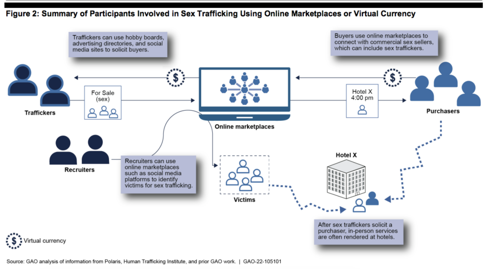

Profile
Profile


Online trafficking is the forced exploitation of individuals to perform “forced labor, slavery, and other exploitative activities” advertised through online technologies. Sex-trafficking is one of the largest subsets of online trafficking, particularly the trafficking of underage females. Often, victims are groomed, manipulated, and blackmailed into the sex trafficking industry. According to the US Department of Defense, “sex-trafficking constituted 71 percent of reported human trafficking incidents in 2017” (Policing Sex Trafficking).

In 2010, when Craigslist shut down its “erotic services” section, Backpage became highly popular as the “second largest classified advertising website.” Backpage gained a “50% growth” in adult service advertisements. After 8 years, “80% of online sex ads” ran on Backpage and yearly profits rose from “71 million to 154.8 million.” Due to the ads being online, the trafficking of minors was more secretive and allowed users to avoid arrest.
In 2015, Visa and Mastercard stopped their transactions on Backpage, resulting in an increased use of Bitcoin (Finance Magnates).

 2022 ERK CS115
2022 ERK CS115